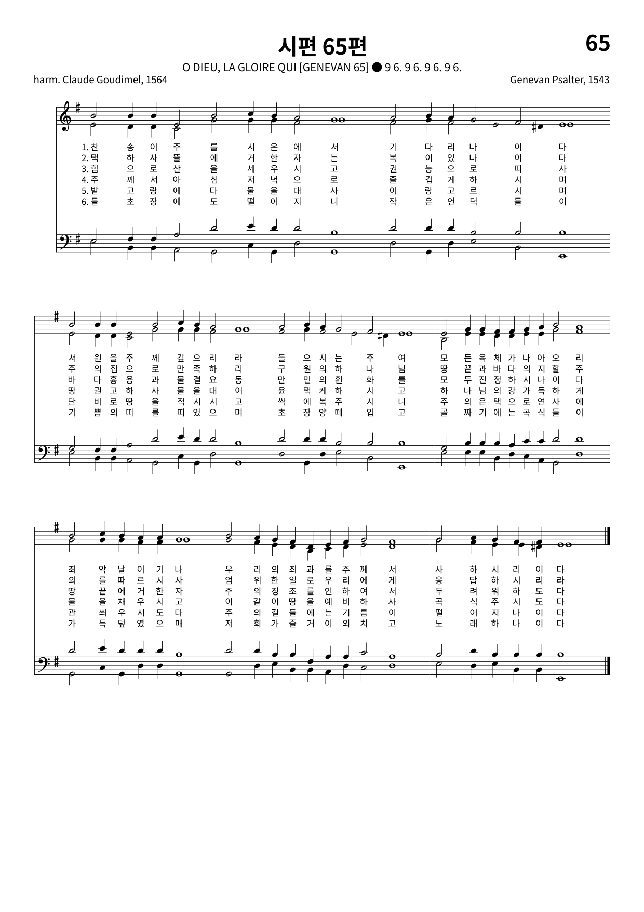

Psalm 65
O DIEU, LA GLOIRE QUI [GENEVAN 65] · 9 6. 9 6. 9 6. 9 6.
English title: Forth from Thy Courts, Thy Sacred Dwelling
Tune: Genevan Psalter, 1543 · Harmony: Claude Goudimel, 1564 · Lyrics: Korean adaptation of Psalm 65 from the Korean Revised Version (AI draft adaptation · not yet theologically reviewed) · 6 stanzas
Score PDF MusicXML (for printing) MusicXML (for accompaniment, with prelude and repeats) Read Psalm 65 (Korean Revised Version)
Score
← Psalm 64 ListAccompaniment (in preparation)Psalm 66 →
Lyrics (Korean)
Stanza 1 (Ps. 1~3)
찬송이 주를 시온에서
기다리나이다
서원을 주께 갚으리라
들으시는 주여
모든 육체가 나아오리
죄악 날 이기나
우리의 죄과를 주께서
사하시리이다
찬송이 주를 시온에서
기다리나이다
서원을 주께 갚으리라
들으시는 주여
모든 육체가 나아오리
죄악 날 이기나
우리의 죄과를 주께서
사하시리이다
Stanza 2 (Ps. 4~5)
택하사 뜰에 거한 자는
복이 있나이다
주의 집으로 만족하리
구원의 하나님
땅 끝과 바다 의지할 주
의를 따르시사
엄위한 일로 우리에게
응답하시리라
택하사 뜰에 거한 자는
복이 있나이다
주의 집으로 만족하리
구원의 하나님
땅 끝과 바다 의지할 주
의를 따르시사
엄위한 일로 우리에게
응답하시리라
Stanza 3 (Ps. 6~8상)
힘으로 산을 세우시고
권능으로 띠사
바다 흉용과 물결 요동
만민의 훤화를
모두 진정하시나이다
땅 끝에 거한 자
주의 징조를 인하여서
두려워하도다
힘으로 산을 세우시고
권능으로 띠사
바다 흉용과 물결 요동
만민의 훤화를
모두 진정하시나이다
땅 끝에 거한 자
주의 징조를 인하여서
두려워하도다
Stanza 4 (Ps. 8하~9)
주께서 아침 저녁으로
즐겁게 하시며
땅 권고하사 물을 대어
윤택케 하시고
하나님의 강 가득하게
물을 채우시고
이같이 땅을 예비하사
곡식 주시도다
주께서 아침 저녁으로
즐겁게 하시며
땅 권고하사 물을 대어
윤택케 하시고
하나님의 강 가득하게
물을 채우시고
이같이 땅을 예비하사
곡식 주시도다
Stanza 5 (Ps. 10~11)
밭고랑에다 물을 대사
이랑 고르시며
단비로 땅을 적시시고
싹에 복 주시니
주의 은택으로 연사에
관 씌우시도다
주의 길들에는 기름이
떨어지나이다
밭고랑에다 물을 대사
이랑 고르시며
단비로 땅을 적시시고
싹에 복 주시니
주의 은택으로 연사에
관 씌우시도다
주의 길들에는 기름이
떨어지나이다
Stanza 6 (Ps. 12~13)
들 초장에도 떨어지니
작은 언덕들이
기쁨의 띠를 띠었으며
초장 양떼 입고
골짜기에는 곡식들이
가득 덮였으매
저희가 즐거이 외치고
노래하나이다
들 초장에도 떨어지니
작은 언덕들이
기쁨의 띠를 띠었으며
초장 양떼 입고
골짜기에는 곡식들이
가득 덮였으매
저희가 즐거이 외치고
노래하나이다